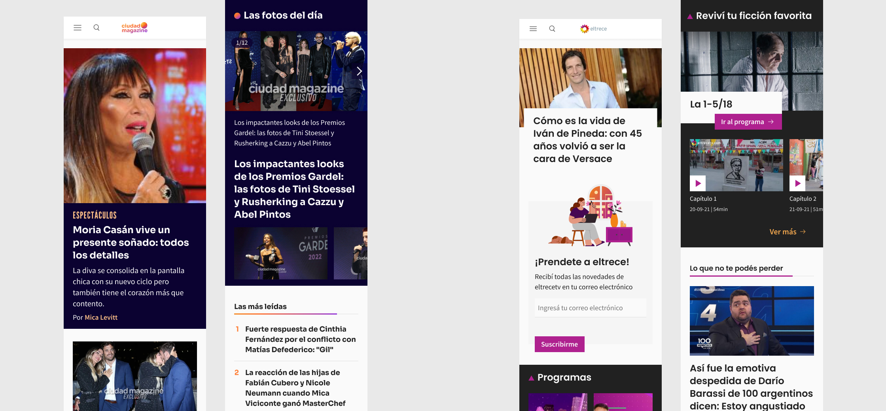
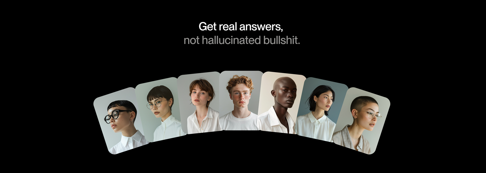
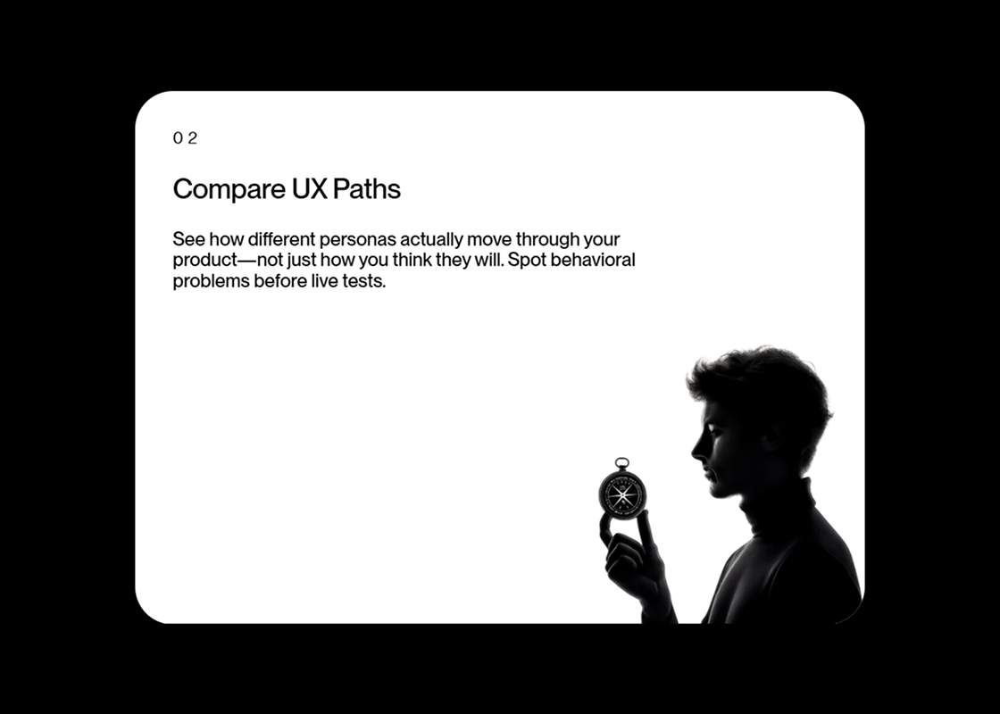
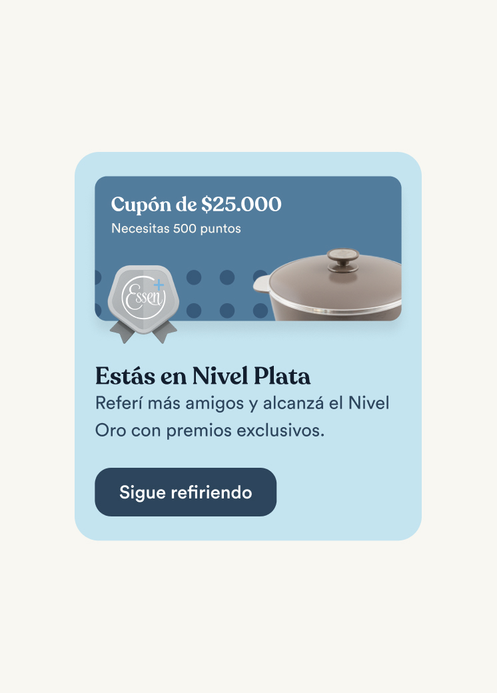
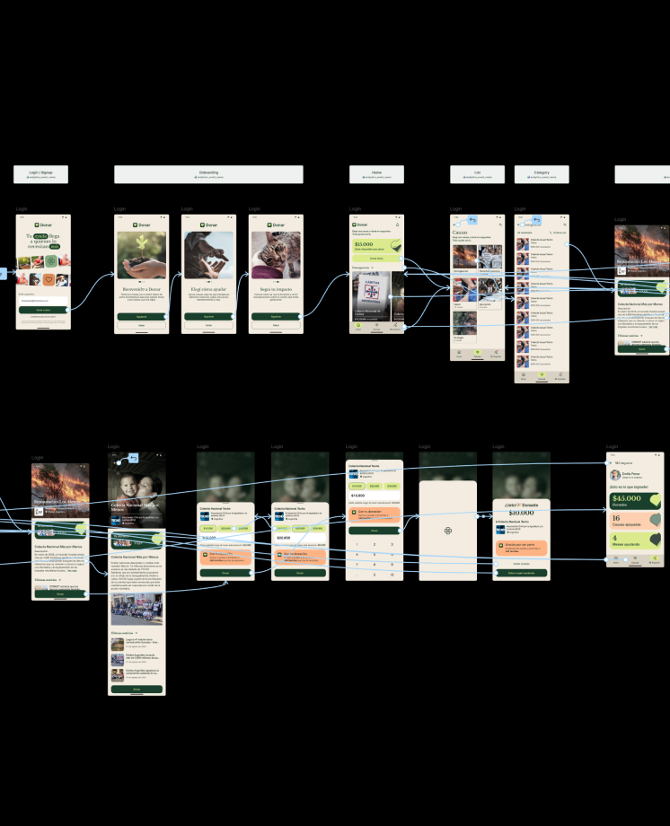

At Artear I worked on the redesign of four high-traffic digital media products: Todo Noticias, eltrece, Ciudad Magazine and the TN app. One of the most interesting challenges was that TN was built on Arc Publishing, the Washington Post's CMS, which meant design decisions couldn't be made in isolation. Every UI and UX choice had to account for how editors actually loaded and structured content, creating a constant dialogue between editorial logic and the end user's consumption experience. Designing for that constraint made the work more complex and more interesting at the same time.
Out of that process came Brick UI, a design system we built from scratch to unify visual and interaction criteria across all four products. The system was designed to be flexible enough to adapt to each product's identity while maintaining a shared component foundation, so what we learned and built for TN could be scaled to eltrece and Ciudad Magazine without starting over. We also had to make it work under real production pressure, covering live scenarios like the 2021 Elections and the 2022 World Cup.
The project was recognized internationally with the Communicator Awards, w3 Awards and EPPY, and received 3,000+ appreciations on Behance.





Broadway is an AI-powered synthetic research tool that lets product teams test ideas with simulated users before going live. I designed and conceptualized the full landing page as the product's main communication vehicle, working within an extremely tight timeline of one week and with a product still in early stages.
The challenge was translating complex technology into a clear, credible and differentiated proposition, aimed at agencies and potential partners, with one single goal: capture leads and generate immediate interest. I worked from a product thinking perspective applied to acquisition, prioritizing impact and clarity over complexity. The result was a landing with a distinct narrative that communicates the product's value in seconds.




Essen+ is a loyalty and referral platform for Essen's community of clients and entrepreneurs. Users sign up, earn points through referrals and purchases, and unlock benefits across three levels: Bronze, Silver and Gold.
I joined the UI phase to apply and extend the existing design system, contributing new components, tokens and definitions while resolving complex screens around sign-up, identity validation, referrals and gamification. The wireframes were defined but many screens needed significant UI work to actually function — that's where I came in.



This project is private
Enter the password to view the content


